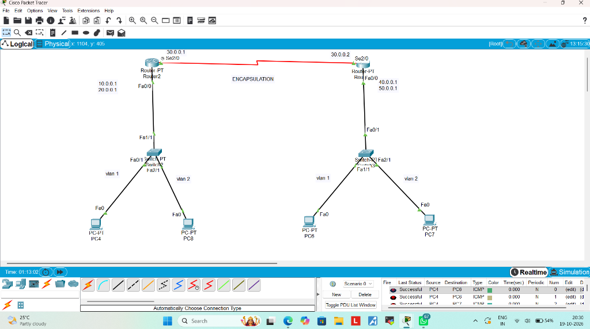
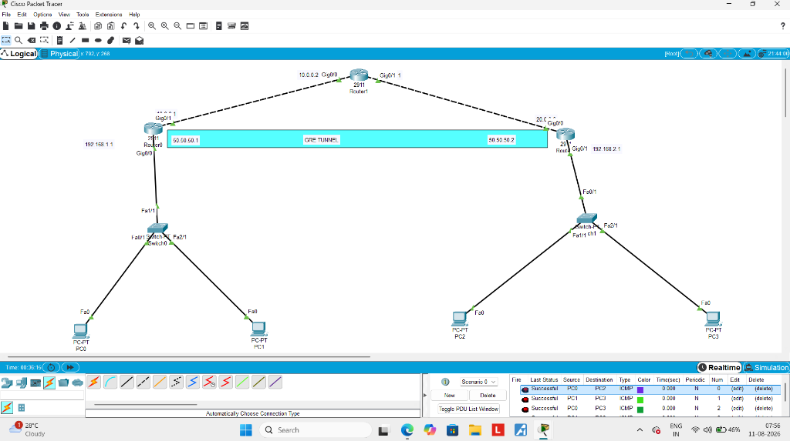
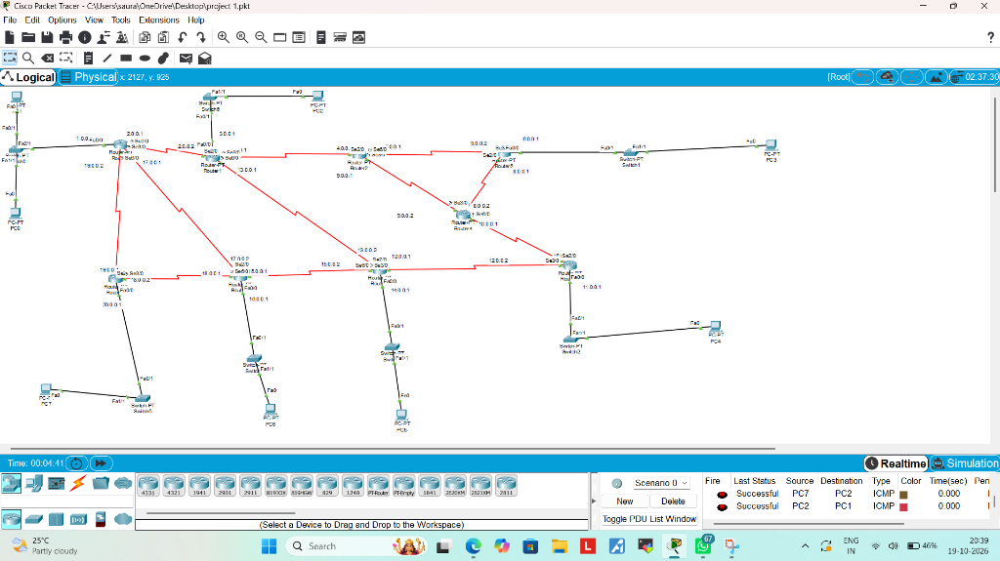
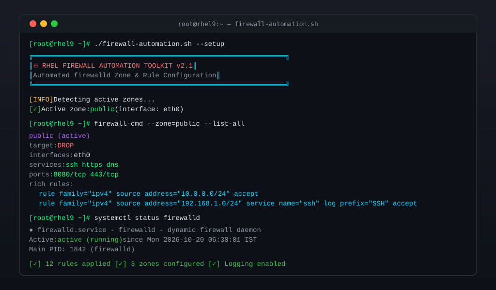
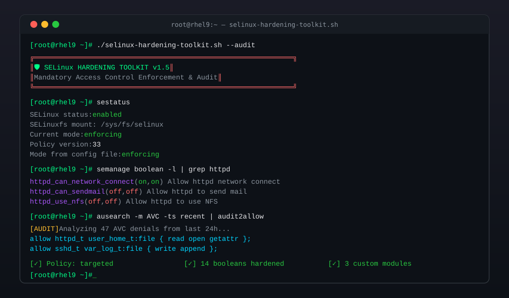

$ whoami
Scroll Down
saurabh@kali:~$ cat about.txt
Hi, I'm Saurabh Dahiya — a passionate Cybersecurity Enthusiast dedicated to securing digital infrastructure and building resilient networks.
I specialize in Network Security, Linux Administration, and Infrastructure Hardening. My work revolves around designing secure network architectures, configuring enterprise-grade routing & switching solutions, and implementing robust security policies on Red Hat Linux systems.
Currently honing my skills in cybersecurity — from VLANs and tunneling protocols to firewall automation and SELinux policies. I believe in learning by building, and every project here reflects hands-on, real-world problem solving.
saurabh@kali:~$ _
Projects
Cisco / Routing
Linux Admin
Hardening / Audit

Configured IEEE 802.1Q VLAN trunking across multi-switch topology. Implemented inter-VLAN routing using router-on-a-stick method with sub-interfaces for seamless cross-VLAN communication.

Built a site-to-site GRE (Generic Routing Encapsulation) tunnel connecting two remote networks over a simulated public IP backbone. Configured tunnel interfaces, static routes, and verified end-to-end connectivity.

Designed and deployed a complex multi-router network topology with OSPF dynamic routing. Ensured full mesh connectivity, configured loopback interfaces, and performed route verification across multiple hops.

Developed Bash scripts to automate firewalld zone configuration, service management, and port rules on RHEL 9. Includes automated zone assignment, rich rules, and logging for security audit compliance.

Created a comprehensive SELinux hardening toolkit for RHEL servers. Automates context labeling, boolean toggling, custom policy modules, and audit log analysis to enforce mandatory access control.
saurabh@kali:~$ cat contact_info.json
{
"name": "Saurabh Dahiya",
"email": "sddahiya1609@gmail.com",
"phone": "+91 8295578997",
"linkedin": "Add your LinkedIn URL here",
"github": "github.com/sddahiya"
}